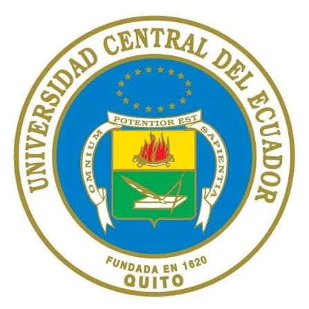

Universidad Central del Ecuador

MISIÓN:
Promover acceso a la cultura universal y generar conocimiento a través de la investigación de excelencia para contribuir al desarrollo humano y al buen vivir del Ecuador, esta misión la cumple a través de la formación de grado y posgrado, de la práctica de la investigación social y experimental y de la vinculación con la sociedad, mediante una proyección de la universidad en el contexto internacional.
VISIÓN:
La Universidad Central del Ecuador será la mejor Universidad pública del país y de la región, con carreras y programas pertinentes en todas las áreas del conocimiento, con sólidas bases de internacionalización, con una significativa incidencia en el desarrollo humano y del buen vivir, a través de sus programas de formación profesional, investigación y vinculación social.